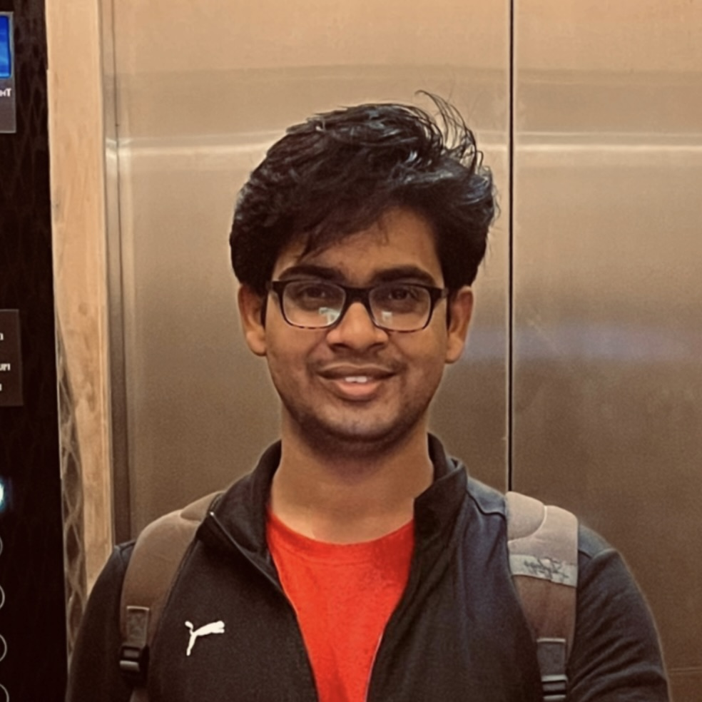
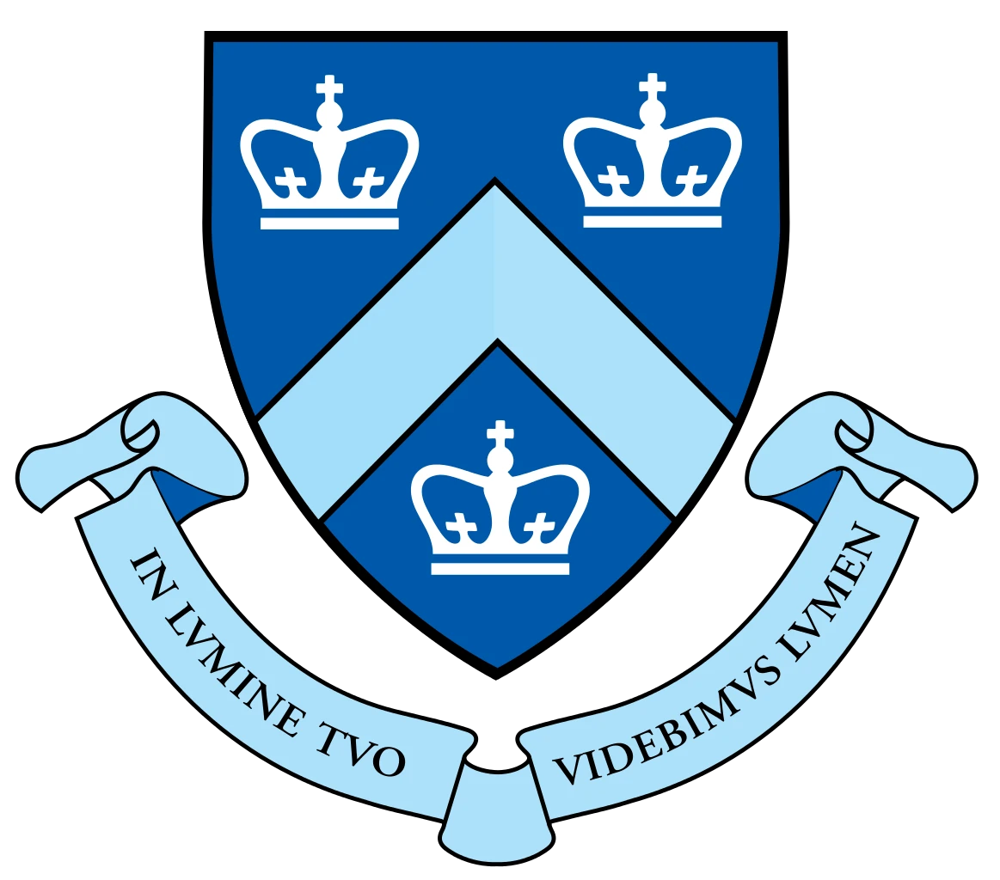

|
Naveen Reddy Dyava I'm a Masters in Computer Science student at the Columbia University in the city of New York, specializing in Machine Learning. I am looking for full-time opportunities starting Jan 2025. Please reach out to me via email or LinkedIn if you think I am a good fit. Email / LinkedIn / GitHub / Google Scholar |
 |
{kind=link}
Education |
|

|
Columbia University in the City of New York
Duration: Aug 2023 - Dec 2024 (expected)
- Deep Learning for Computer Vision (Department of Computer Science) - Applied Data Science for Social Scientists (Graduate School of Arts & Sciences) |
|||||||||||||
|
|
Indian Institute of Technology Madras (IIT Madras)
Duration: Aug 2017 - May 2022
- Big Data Lab (Department of Computer Science) - Engineering Drawing (Department of Mechanical Engineering) |
Publications |
ENTER: Event Based Interpretable Reasoning for VideoQA
Status: In review |
Research Experience |
Research Assistant | Digital Video and Multimedia Lab at Columbia University
Duration: June 2024 - Dec 2024 |
Graduate Student Researcher | COSMOS Testbed, Columbia University
Duration: Jan 2024 - May 2024 |
Research Assistant | Indian School of Business
Duration: May 2022 - Jul 2022 |
Graduate Student Researcher | IIT Madras
Duration: May 2022 - Jul 2022 |
Undergraduate Student Researcher | IIT Madras
Duration: Nov 2022 - Jul 2022 |
Professional Experience |
Analyst (Machine Learning) | American Express
Duration: Aug 2022 - Aug 2023 |
Software Engineer (Machine Learning) Intern | Siemens
Duration: Jun 2021 - Jul 2021 |
Software Engineer Intern | Siemens
Duration: Dec 2020 - Jan 2021 |
Software Engineer Intern | Vidyutka Technology Solutions Pvt. Ltd.
Duration: May 2020 - Jun 2020 |
Software Projects |
Restaurant Recommendation Chatbot using LangChain
Naveen Reddy Dyava Developed a scalable chatbot with LangChain for conversational flow and vLLM with LLama-3.1 for low-latency inference, using FastAPI and Uvicorn for high-performance serving. Integrated PostgreSQL for data retrieval and automated email notifications via SMTP, with Pydantic for validation |
Backend of a Cloud-Based Video Conferencing Application
Naveen Reddy Dyava, Mooizz Abdul, Abhilash Ganga Developed a backend Flask web server using microservices on AWS - DynamoDB, S3, and EC2 supporting video conferencing for up to 4 users. Built a REST API using API Gateway. Implemented stateless and asynchronous architecture using Lambda functions for account browsing functionalities |
Scalable Web Application using Kubernetes
Naveen Reddy Dyava, Anirudh Varanasi Built a web application using FastAPI, MongoDB, Docker, and Kubernetes. Deployed on AWS EKS. Configured replication controllers, rolling updates, and health monitoring, and integrated Prometheus with Slack for failure alerts |
Intelligent Photo Album with Single-Click Deployment (IaC) and CI/CD Integration
Naveen Reddy Dyava, Anirudh Varanasi Developed a photo album web app integrating 9 microservices, supporting voice-based search. Designed a REST API with 1 POST and 2 GET endpoints, rate limiting, and API key-based security. Built an inverted index with OpenSearch. Enabled single-click deployment via CloudFormation. Configured 2 CI/CD pipelines using AWS CodePipeline. |
Research Projects |
Unified Instruction Guided Multimodal Information Retriever
Naveen Reddy Dyava, Mooizz Abdul, Abhilash Ganga Developed a retrieval model to handle 8 tasks on a pool of image and text documents. Experimented with mixed-modality transformers and cross-attention on frozen VLM encoders. Applied instruction tuning, multitask training, and contrastive learning objectives to train models. |
ControlNetVSR: Video Super-Resolution using Diffusion Models
Naveen Reddy Dyava Designed a Video Super-Resolution architecture integrating ControlNet, Stable Diffusion X4 Upscaler, and Optical Flow, achieving 31% improvement in reconstruction quality, 10% in perceptual quality, and 29% in temporal consistency |
Financial Portfolio Optimization using Reinforcement Learning
Naveen Reddy Dyava, Harshvardhan Srivatsava Implemented 8 Reinforcement Learning methods to optimize portfolio strategies for Dow Jones and FX |
|
Design and source code from Jon Barron's website |